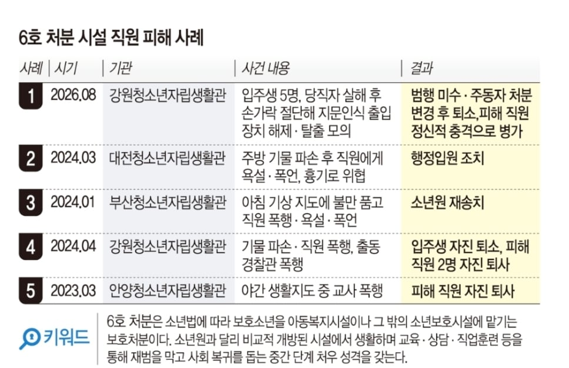

강원 청소년자립생활관에서 6호 처분 받은
애들 5명이 탈출 모의함 (소년원은 8호(1개월 이내), 9호(6개월 이내), 10호(2년 이내 소년원 송치)이며, 6호 처분은 비교적 사회 내 처우에 가까운 아동복지시설이나 소년보호시설 위탁에 해당)
근데 출입문이 지문인식이라
당직 직원 살해하고 손가락 잘라서 지문 찍고
탈출하려고 했다고 함
직원이 낌새 이상한 거 눈치채고
경찰 불러서 미수로 끝남
직원은 충격 때문에 병가 내고
주도한 애는 처분 변경돼서 퇴소
초장에 끝내야지 ㅠ
라이라이차차차차차